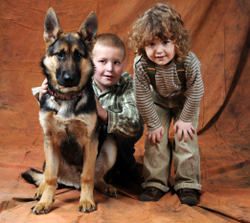

Return to Top | Advantages | Disadvantages | Where We Are Today |
Rent A Pet began with a family that loved dogs. George Smith and his wife Carol owned two Irish Setters. These dogs were pets to the Smith family children and extended family members. One day as George was walking his dogs in the park, he noticed how they attracted the attention of passing women. They seemed to like to stop what they were doing and ask him about his dogs. A young woman remarked that she would love to have a big dog like that to walk, but she had a small apartment and couldn't keep a large dog. What if there were others, possible many others, who wanted companionship of pets without the responsibility? Maybe people would be willing to pay to rent or borrow a pet for a short period of time.
George shared his idea with Carol and they began to look at the pros and cons related to start a small business that would rent dogs for a day. Some of the advantages and the disadvantages are:

After weighing these points, the Smiths decided to go ahead by starting small and in the fall of 1980 started Rent a Pet. The business offered its customers the companionship of a pet without all the care of the extra expense or hassles of ownership. They began with only providing dogs for rent. Since the company's inception, Rent a Pet has extended their offerings by also adding cats, horses, pigs and snakes for rent.
Rent a Pet has expanded from its early location in Provo and now has franchises in Logan, Bountiful, Salt Lake City, and St. George. They employ their own trained vet and have yet to have any accidents due to their rental pets. Rent a Pet also employs an animal trainer who works with the dogs and horses daily. Rent a Pet has attracted many satisfied customers. The company frequently provides their services to senior citizens who reside in retirement homes that prohibit pet ownership. A senior can enjoy a dog or cat for the day and even take them for a walk. Surprisingly, young men looking to strike up a conversation with young women often rent dogs that like jogging or playing Frisbee. Specially trained trick dogs can be rented for parties or appearances in movies or commercials. The most unusual pet, snakes, are usually rented for Halloween or other occasions where the customer wants to use them for shock value.
| Animal Type | Regular Price | Sale Price |
|---|---|---|
| Dogs | $48 | $36 |
| Cats | $40 | $30 |
| Horses | $150 | $110 |
| Pigs | $48 | $39 |
| Snakes | $36 | $24 |
Horse and Hound Magazine, January 20, 2011:
"An exciting opportunity for pet lovers who don't have room or time for ownership of their own pets is now available through Rent a Pet. This company has found a niche by providing on-demand time with a variety of pets from dogs and cats to horses, pigs and even snakes. Their rates are reasonable and they will even deliver and pick up the pet of your choice."
Pet Weekly, August 15, 2012:
"Rent a Pet provides its customers with the chance to enjoy companionship of a wide variety of pets. Did you ever wish your dog had special talents like the trick dogs you see in movies or on TV? Did you ever want to go for a horseback ride, but you didn't know where to find a horse? All you have to do now is rent a talented pet and your friends will be amazed."